boba buds
Fostering a community of boba enthusiasts with the discovery of new drinks
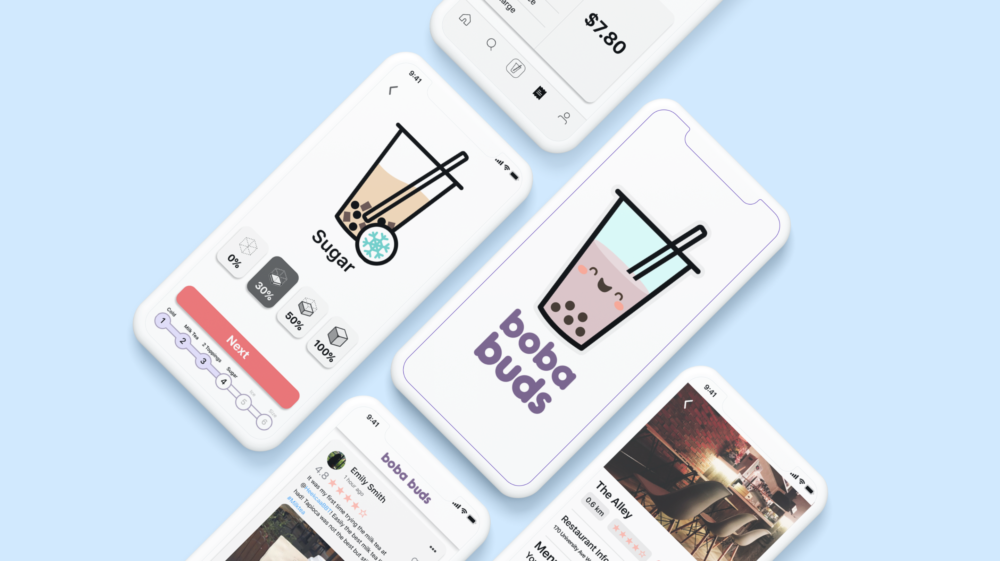
Timeline: January 2020 at Starterhacks (24 hours)
Role: 1 of 2 product designers in team of 4
Tools: Figma, Adobe Illustrator
Skills: User research, UI design, business strategy
How might we design an application that allows boba (short for bubble tea) enthusiasts to connect and improve their overall customer experience?
Overview
In one of my first hackathons at Starterhacks 2020, I worked with 3 of my friends, Jayden Hsiao, Samantha Orizabal, and Alex Guo, to create a hybrid social media and food ordering platform that builds a community of boba lovers and streamlines the process for discovering new drinks. Throughout the process, I had the opportunity to interview potential users, analyze competing platforms, create a medium fidelity prototype in Figma, as well as present our solution to a panel of judges. As a result, we received the “Best Pitch Award” out of 1000 participants.
See the complete file below:
Design Process
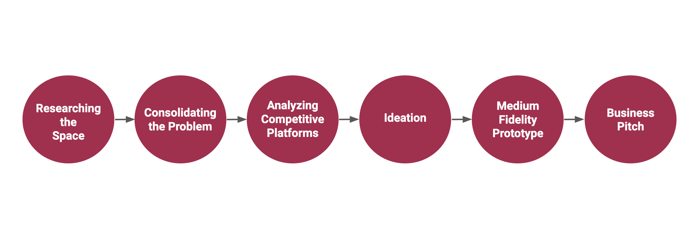
Researching the Space
Since the hackathon was limited to 24 hours, we had to narrow the scope of the project and identify a topic that we wanted to tackle. Because of our mutual love for boba, we decided to pursue the topic of boba and see if there is a pain point we can attempt to solve. Thus, to better understand how people perceive boba, we reached out to young adults such as Starterhacks participants, classmates, and other friends to complete a survey and comprehend how people interact with their boba. Overall, we received over 184 responses to our Google Forms survey.
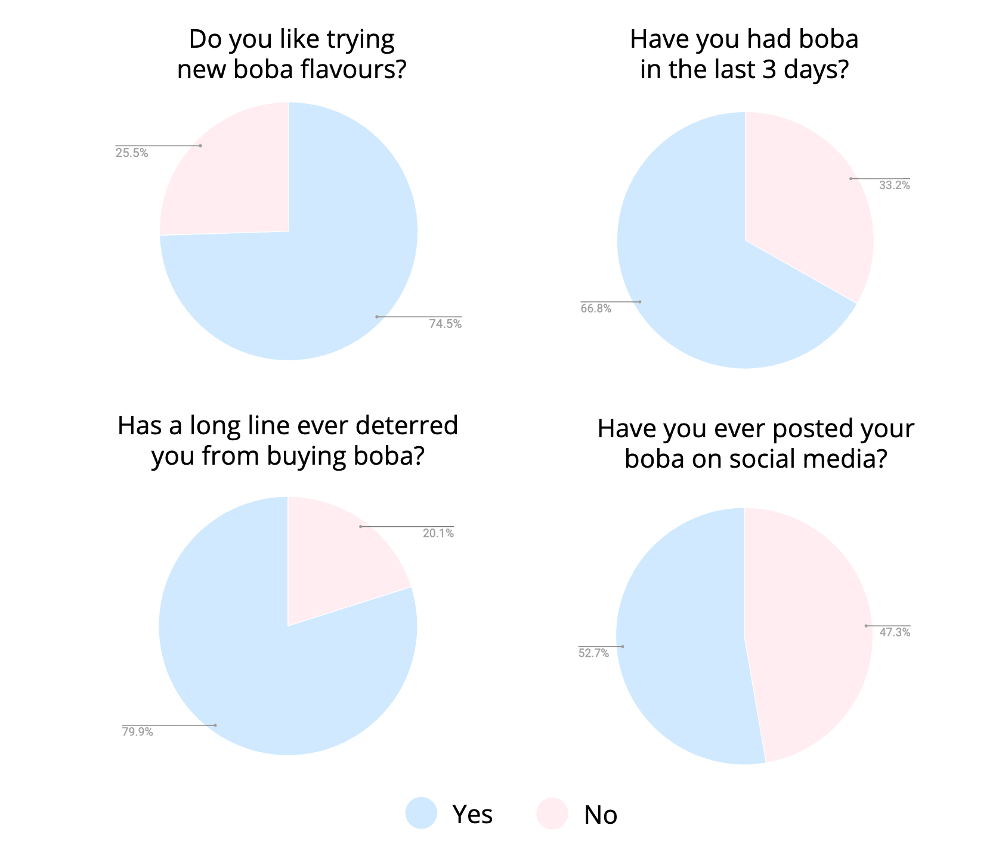
We discovered that more than 66% of respondents have had boba within the last 3 days, almost 75% of respondents enjoy trying new flavours of boba, almost 80% of respondents have been deterred from buying boba due to long lineups, and more than 50% of respondents have posted boba on their social media platforms.
Consolidating the Problem
From our survey, we uncovered key findings that could improve the discovery, buying, and sharing experience of boba for young adults. On the flip side, this also results in boba shops wanting more exposure which leads to more business.
To direct our solution, we created a problem statement that summarizes the key features we want to discover:
How might we design an application that allows boba enthusiasts to connect and improve their overall customer experience?
Analyzing Competitive Platforms
Since we were looking to create a community-based platform with an in-app ordering method, we decided to analyze Instagram, a community photo-sharing platform, as well as Uber Eats, a food ordering platform. By breaking down key features from both apps, we can gain inspiration when building our own application.
When analyzing Instagram, we liked a number of features, such as having featured photos, captions, authors, interactive icons, custom content, easy access to a navigation bar, and search functionality. These features keep the content engaging and encourage users to continue using the platform.
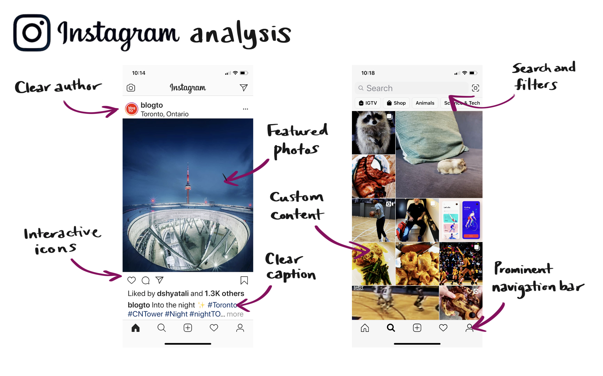
In terms of Uber Eats, we found that the clean UI presented in a card style was very readable, the ability to view details by filtering or seeing restaurant ratings. Also, once again, having the navigation bar to easily access different sections of the application. Particularly for a food application, I found that the “orders” tab in the navigation bar was important for people to view their past and upcoming orders.
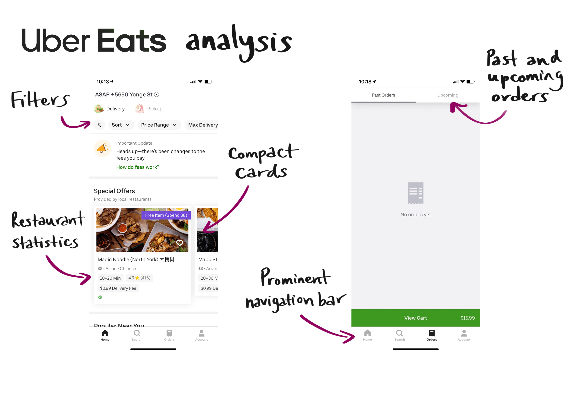
Ideation
As a group, we planned out the user interfaces and flow of the application to ensure that we had a common understanding of what we wanted to build before setting out to complete it.
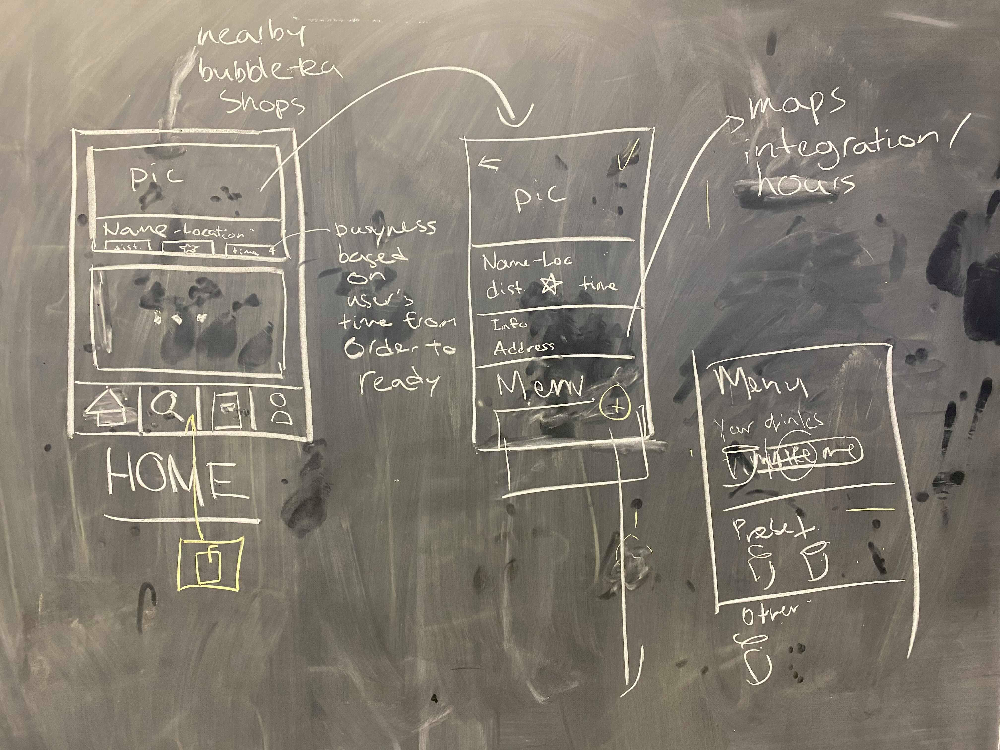
Medium Fidelity Prototype
After creating a rough user flow, we were able to further develop our ideas and concepts into a medium-fidelity prototype, as well as focus on developing branding for our application.
I helped to decide on the final colour palette that we were using. It consists of a variety of pinks and purples with green and yellow to accent. We also decided on our main mascot and style of illustrations that will be integrated into the application. We wanted to maintain a friendly and fun branding to cultivate such a community of boba lovers.
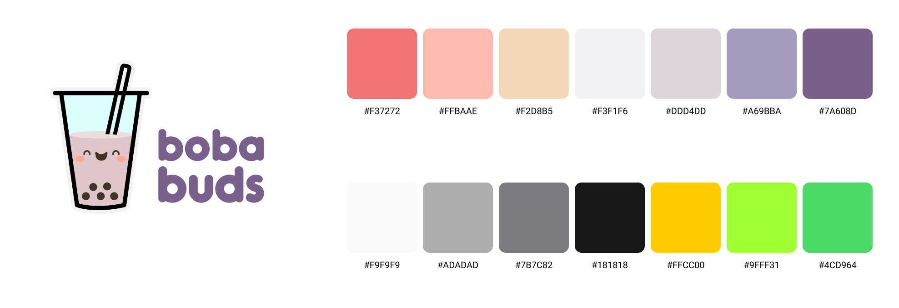
In the end, we used Figma to create a golden path of screens that the user would encounter with their adoption of the application. In this flow, we were able to explore all of the different features of our application by adding prototype connections.
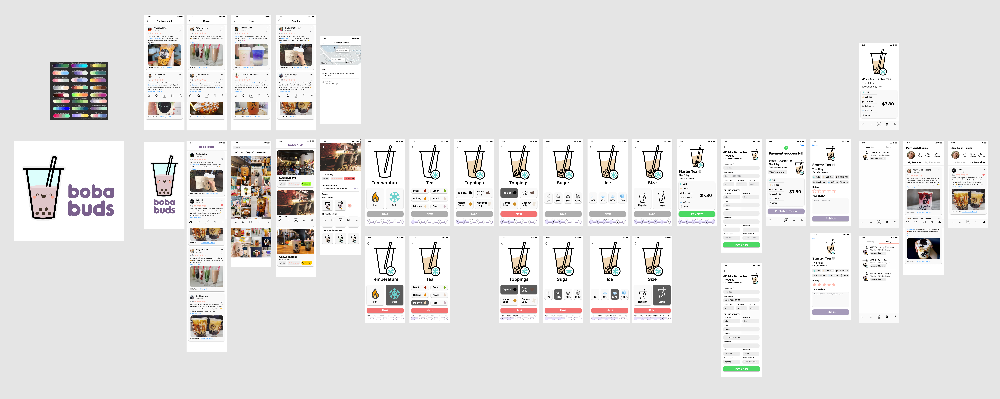
Platform Features
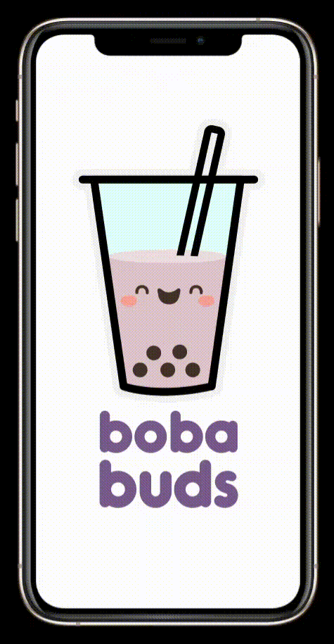
Curated Homepage
When designing the homepage for boba buds, we wanted to ensure that the platform is cultivating a personalized boba community for the user. Here, the user can view boba reviews from others that they have followed. These reviews are displaying in compact cards so that the effort needed to view more content on one’s feed is minimized. Also, the homepage is designed with common and well-known interactions of popular social media applications in mind.
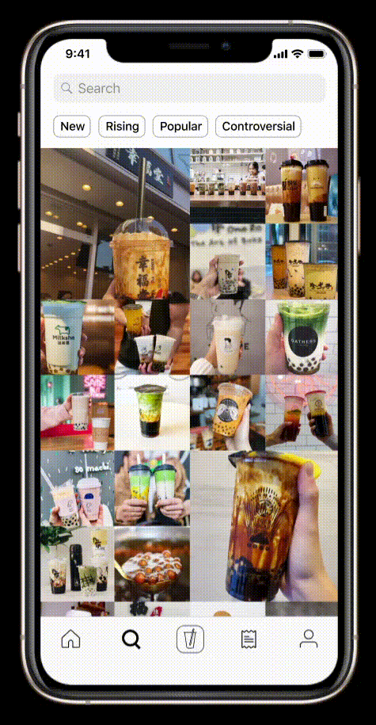
Discovering New Drinks and Other Boba Lovers
In addition to a homepage, we created a search page where users can discover more within the boba community. They are presented with a search bar at the top of the page, common filtering tags, as well as a compact gallery to allow users to view more aesthetic content at once. This gallery is populated with content that our algorithm thinks the user may like based on previous posts they have viewed. All of the features are intended for users to explore the wider community’s interests, as well as their own.
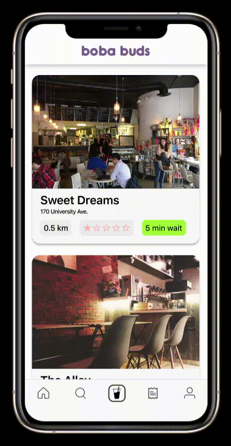
Streamlining a Personalized Order and Review Experience
An important feature we wanted to implement into the application is the ability to order boba from nearby boba shops – benefitting both boba lovers and boba shops. Here, the user is able to select a boba shop based on distance, ratings, wait times, or available menu. The user can choose to purchase a custom drink, a drink they have previously purchased, one on the shop’s menu, or a drink that someone else has made and posted. Here, they can customize things like the size of the drink, the base, toppings, as well as sugar and ice level – all while accompanied by cute graphics! At the end of this process, the user can publish a review for the drink they just purchased so that other users can discover their drinks.
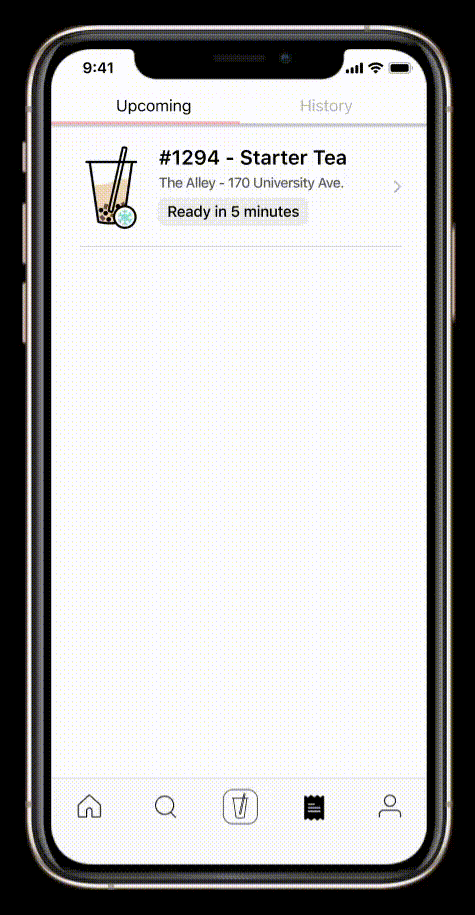
Keeping a Transaction History
Because users are ordering within this application, we wanted to include a way that they can keep track of their upcoming orders and previous orders. Thus, we added a section in the navigation bar so that they can access this feature. Here, the user can tab between their current order which shows wait times, and the details of their previous boba orders.
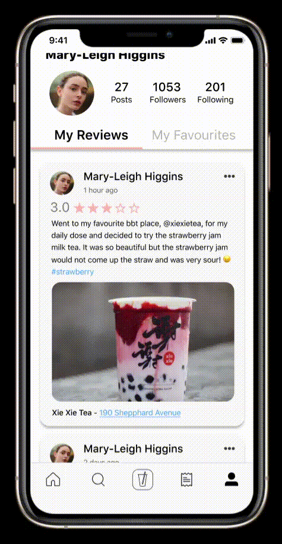
Crafting a Profile
The last aspect of our application was a user’s profile. In their profile, they can see all of their own reviews so that they can keep track of all the boba shops they have been to, as well as the drinks they have tried. They can also see the reviews that they have liked or favourited from their home or discovery pages. This way, they can refer back to these as needed and try that drink next time.
Outcomes
After creating the mockups, my team and I turned our attention towards crafting a pitch to present boba buds to the judges. We were nervous; we were newbies and it was some of our first times presenting an idea to judges. We were exhausted, but we powered through it and mustered up all the excitement and energy we had!
More than 24 hours of pushing pixels later, it was time for us to see the results of Starterhacks!
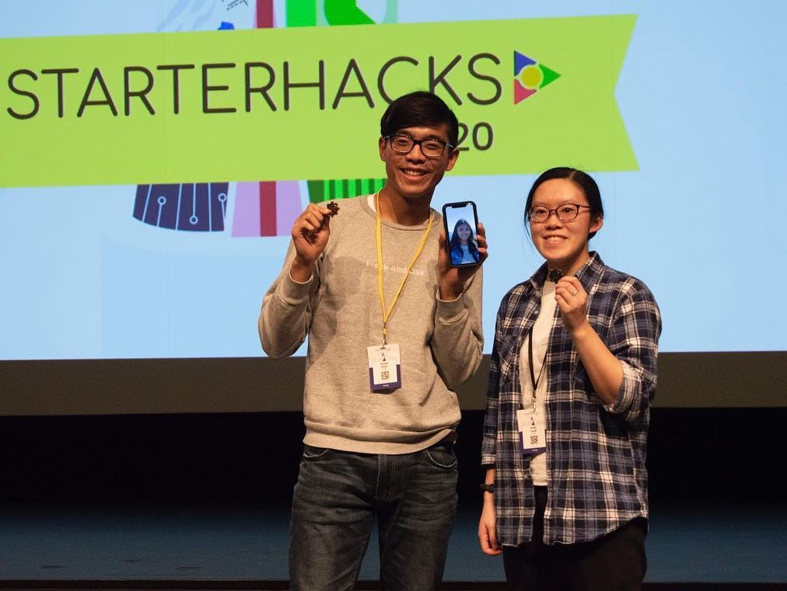
It turns out that our team won Best Pitch out of the 1000 participants at Starterhacks! This was a totally unexpected result given that it was one of our first times at a hackathon. We were super proud of each other.
After the event, one of the judges, Patrick Issacs the marketing director of GrowthDriver.io, commented on our project:
"Your pitch really did wow me as a judge! Your team impressed me by how thorough and comprehensive your research was, the well-conceptualized prototype, and even down to the actual app design looked ready for prime time."
Next Steps
Although we created the golden path for our application in Figma, there is still a lot that can be created and improved upon for the application in the future. At the end of our pitch, we highlighted a few of these items:
- Conduct additional user testing and determine if the application gain traction
- Complete the designer to developer handoff
- Partner with boba businesses and onboard them in using the application to service this stream of customers
- Gather a user base to prepare for launch
I loved working on this project at Starterhacks, and it definitely taught me a lot:
- Challenge my assumptions
- Focus on the bigger picture before diving into the details
- Always have fun!
When we first started exploring the idea of boba as our topic to tackle, I assumed that no one would want such a platform, and that the idea was not going to succeed. However, after receiving our survey results, my perspective shifted slightly as I learned that by exploring this application, we may impact many. Also, after pouring hours of hard work into designing the platform, we found that people enjoyed our application and would actually use it if we were to further develop it into reality. Thus, I should rely on evidence before coming to conclusions.
After choosing a topic and gathering research, we dove right into designing. However, sometimes we ended up focusing too much on the details rather than the overall experience, resulting in the confusion or a lack or progress. Next time, we should ensure we have a solidified plan so that we can maximize efficiency, especially at a hackathon with a limited time frame.
At first, we struggled with a challenge that was given by the hackathon for hackers to tackle. We initially chose it because it had a huge prize and we wanted to win. But we found that we were struggling to develop an idea and were not having fun. After some time, we decided to pivot to something more light-hearted and fun: boba. From this hackathon, I learned that we do not need to focus on winning; instead, I should do my best to have fun and learn with my teammates!
Conclusion
My time at Starterhacks was super fun! Before the hackathon, my team and I did not think we had a chance of winning – but 24 hours later, we ended up winning Best Pitch. I am proud of all that my team and I were able to accomplish in the 24 hours. Along the way, we got to meet representatives from different companies, meetup with the rest of the Systems Design Engineering 2024 cohort participating at Starterhacks, and hoard Awake Bars to stay up until 3am illustrating boba cartoons. It was a whirlwind of a ride, and I am thankful for this opportunity to participate in Starterhacks and design boba buds!
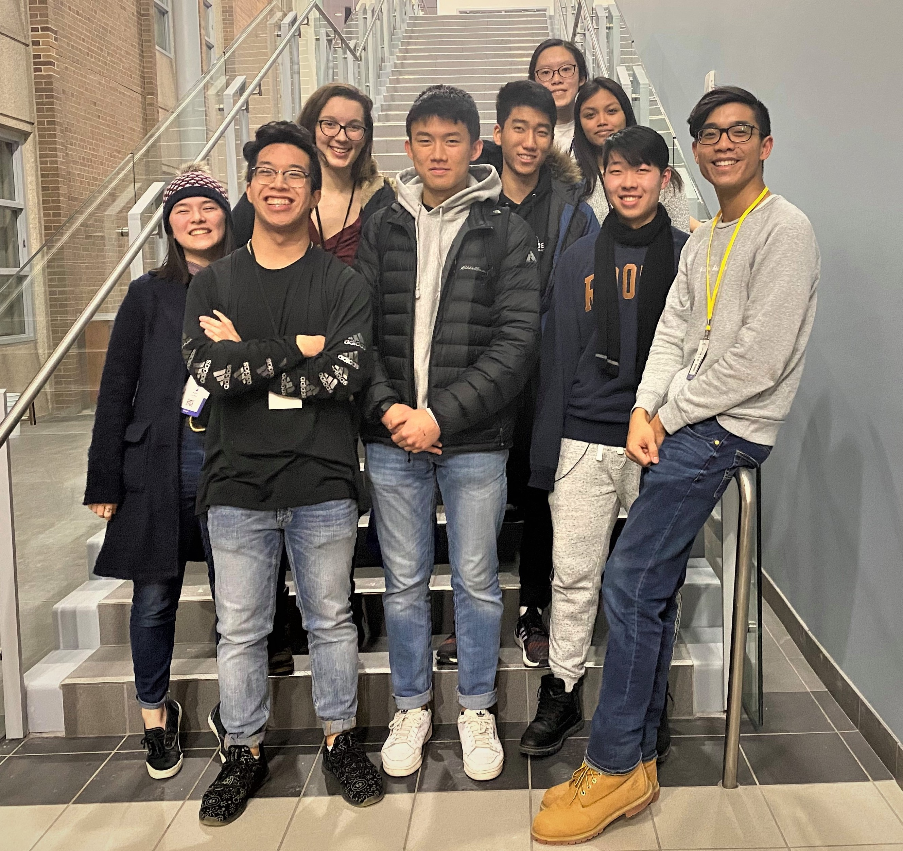